Configuração
Neste ponto do menu é possível estabelecer os parâmetros necessários para garantir o correto funcionamento do equipamento, assim como adapta-lo para o uso especifico da sua empresa, O estado da conexão de redes, permissões de usuários, etc.
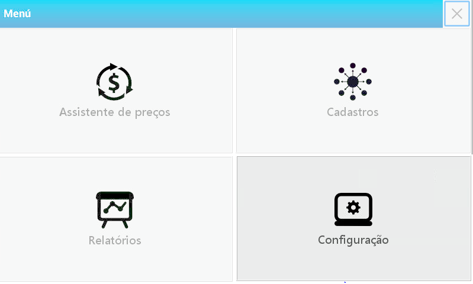
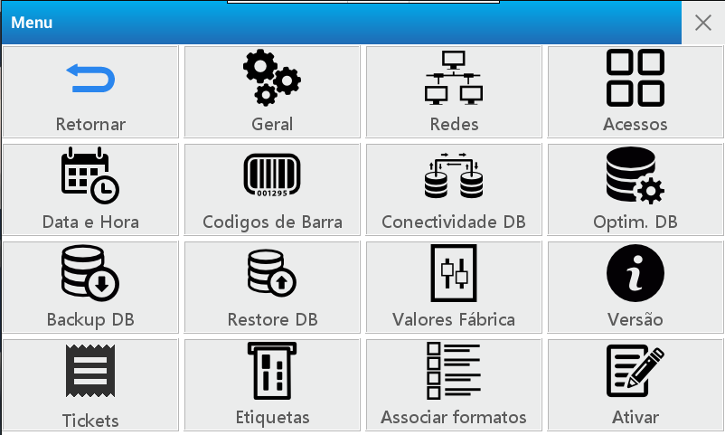
Geral
Esta opção permite as configurações gerais do equipamento para adaptar a balança as necessidades pontuais da empresa.
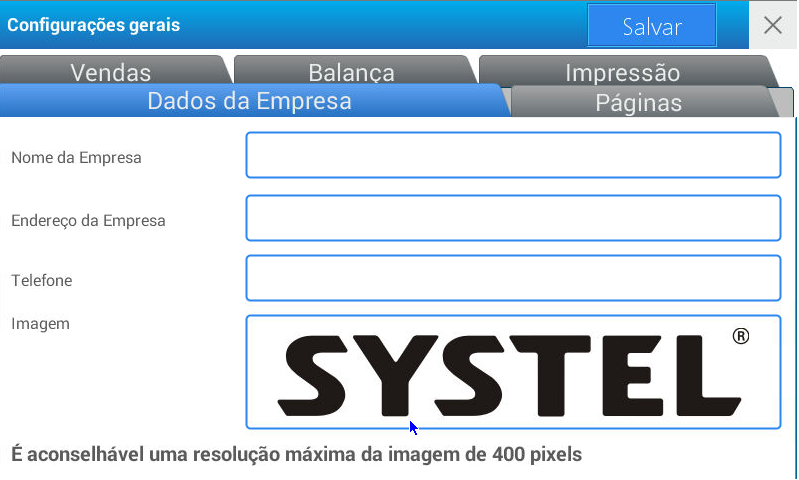
Detalharemos primeiro as funções de cada opção nas abas:
- Dados da empresa: Neste espaço é possível incorporar as informações referentes a sua empresa ou comércio. Estas serão visualizadas como cabeçalho nas impressões do equipamento
- Páginas: aqui é possível a alteração dos nomes das páginas iniciais dos acessos diretos
- Vendas: permite determinar permissões de acesso, a alteração de preços, venda de produtos genéricos e visualizar o número do último ticket impresso
- Balança: Nesta seção é definida o nº da balança (para a situação de vários equipamentos em operação), visualização do ponteiro na tela, tempo de espera das teclas especiais e da propaganda, modo de balança, entre outras funções
- Impressão: permite definir a quantidade de cópias e ajustar a tonalidade de impressão e também restaurar os formatos de impressão
A seguir são demonstrados como completar os dados em cada aba.
Acesse o menu pressionando a tecla .
Selecione o usuário e digite a senha correspondente.
Pressione Aceitar
Escolha a opção Configuração localizada na parte inferior direito da tela
Será visualizado o menu completo deste módulo. Pressione Geral
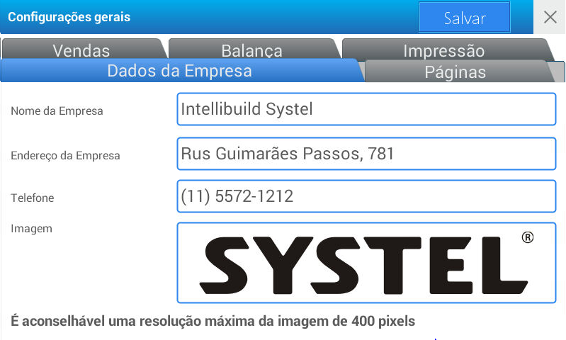
Na aba Dados da Empresa encontra-se o primeiro campo denominado Nome. Aqui é inserido a identificação da empresa. acesse e campo e pressione a tecla para habilitar o teclado alfanumérico. Insira a denominação desejada e em seguida pressione Enter
Para os campos seguintes Endereço da empresa e Telefone utilize os mesmos passos anteriores para preenche-los. É possível a utilização também o teclado numérico da balança.
No campo imagem é possível a associação do logo de sua empresa (tamanho máximo 400 pixels) Pressione sobre o campo em branco para habilitar o menu de busca. Deslize a barra lateral para buscar ou utilize o campo de texto para realizar uma busca por palavra chave.
Pressione Salvar
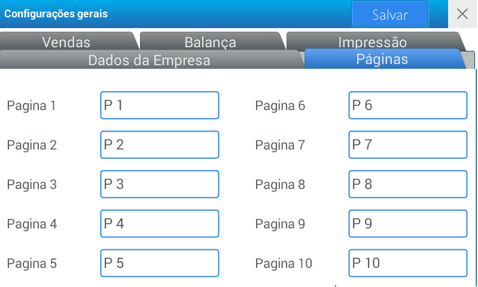
Na aba Páginas insira o nome que identificará as páginas de acesso rápido.
Pressione sobre cada linha para ativar a edição
Pressione a tecla para habilitar o teclado alfanumérico
Insira a denominação desejada
Pressione Salvar
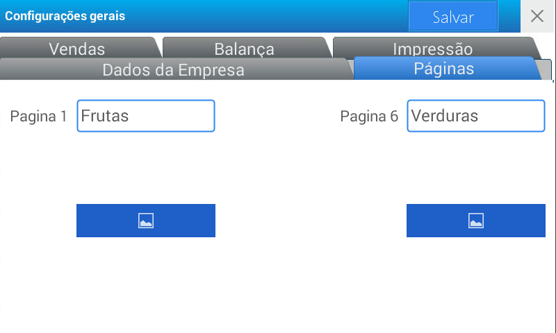
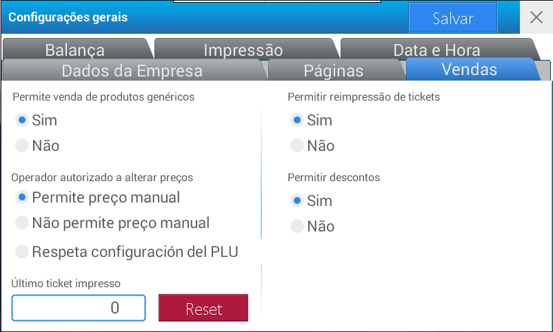
Na aba de Vendas estão disponíveis os seguintes itens:
- Permitir venda de produtos genéricos
- Operador autorizado a alterar preços
- e visualizar o último ticket impresso
- Também alterar o ticket para as configurações de fábrica Ao finalizar pressione Salvar.
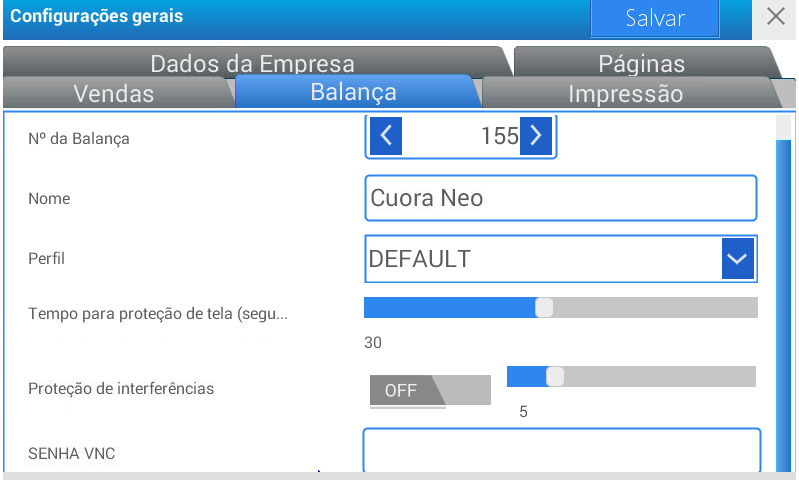
Na aba Balança é possível:
Colocar o número que identifica o equipamento (utilizado para conexão de rede) no campo Nº de Balança. Insira o número através do teclado ou utilize as setas para selecionar o número desejado.
Selecione o Tempo de exposição de publicidade deslizando o cursor para a direita para incrementar o valor de tempo de exposição.
Deslize o cursor na opção Número de exposições para aumentar o número ou para a esquerda para reduzi-lo.
Pressione o seletor ON-OFF Tempo de espera para teclas especiais para ativá-lo. Utilize o cursor da direita para aumentar o número ou o da esquerda para reduzi-lo.
Para ativar VNC primeiramente insira a chave no campo de texto habilitado correspondente e em seguida a tecla à direita para ativá-lo.
Pressione o botão ON-OFF do modo AUTO SERVIÇO para ativa-lo ou desativar esta opção. A Reinicialização do equipamento é necessária.
Pressione Salvar.
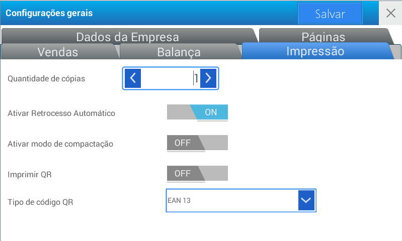
e por último a aba Impressão.
Para determinar o número de tickets a serem impressos cada vez que se realize uma venda com impressão insira o número desejado em Quantidade de Cópias. Para isto utilize as setas ou insira através do campo de texto.
Ativar Retrocesso Automático a impressora move a etiqueta alguns milímetros para trás, para aproveitar todo o espaço disponível.
Ativar modo de compactação elimine os espaços em branco da impressão.
Ativar a impressão de códigos QR no final do tíquete (disponível apenas no modo tíquete).
Selecione o tipo de código de barras a ser incluído no código QR (lembre-se de definir o código de barras corretamente).
Pressione Salvar.
Redes
O equipamento dispõe de dois tipos de conexão:
- Ethernet
- Wi-Fi
A balança possui uma porta de comunicação localizada na parte inferior do equipamento que permite a comunicação com um PC ou a conexão em rede com outros equipamentos. Para maior segurança, ao conectar sua balança na rede de comunicação solicite a assistência técnica de um dos ATAS (Agente Técnico Autorizado SYSTEL).
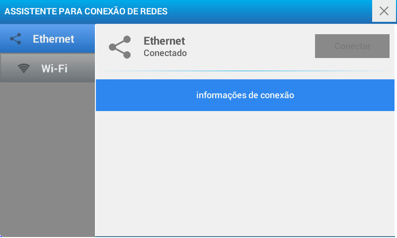
Acesse o menu pressionando a tecla .
Selecione o usuário e digite a senha correspondente.
Pressione Aceitar.
Escolha a opção Configuração localizada na parte inferior direita da tela
Será visualizo o menu completo deste módulo. Pressione Redes
Na posição inferior da tela, são visualizados as opções:
- Ethernet
- Wi-Fi
- Sair
Ethernet: Utilize esta opção para conectar-se a um PC (rede ponto a ponto), ou em rede com outros equipamentos.
Pressione Conectar.
Wi-Fi: Esta opção, é efetuado uma busca, e o display exibe as redes próximas disponíveis
Pressione Scan para atualizar as redes
Selecione a rede desejada
A seguir, insira a senha de acesso para a rede
Pressione aceitar para que o equipamento salve a rede e se conecte automaticamente sem a necessidade de uma nova busca quando for reiniciado.
Acessos
Permite configurar as teclas de acesso rápido página por página.
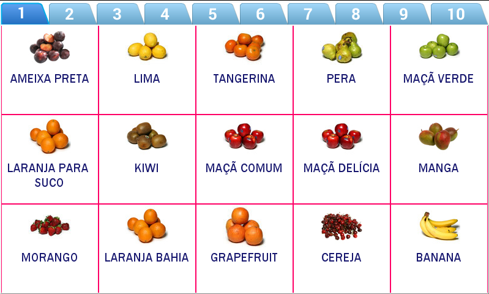
Acesse o menu pressionando a tecla .
Selecione o usuário e digite a senha correspondente.
Pressione Aceitar.
Escolha a opção Configuração localizada no canto inferior da tela
Será visualizado o menu completo deste módulo. Pressione Acessos
Selecione a página desejada que será criado o acesso rápido
Selecione a posição da tecla onde se deseja associar o produto.
Será visualizada a seguinte tela
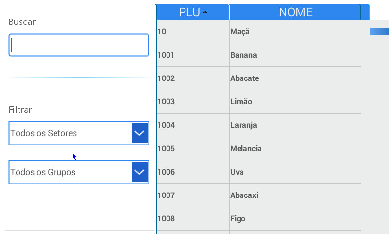
Selecione o produto a ser associado, clicando sobre ele.
Para realizar a busca de um produto através dos filtros selecione Filtro on/off localizado no canto superior direito.
Ajuste a busca através dos campos de setores e/ou Grupo.
É possível também a busca através da descrição por uma palavra chave.
Na tela inicial será visualizada o produto escolhido.
Para excluir uma tecla de acesso, mantenha pressionada a tecla por alguns segundos.
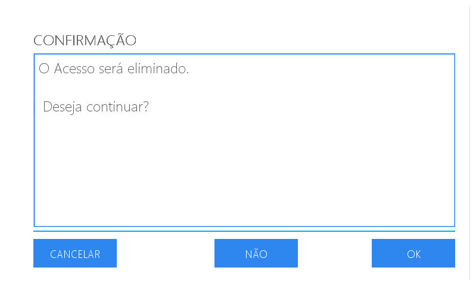
Será solicitada uma confirmação de exclusão.
Pressione SIM para confirmar a operação ou CANCELAR para abandonar.
Em seguida Pressione Sair
Data e hora
Esta opção ajusta a data e hora da balança.
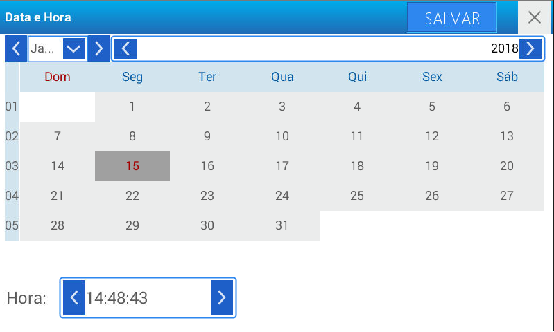
Acesse o menu pressionando a tecla .
Selecione o usuário e digite a senha correspondente.
Pressione Aceitar
Escolha a opção Configuração localizado no canto inferior direito da tela
Será visualizado o menu completo deste módulo. Pressione Data e Hora
Para selecionar o mês utilize as setas localizadas no canto do campo.
Pressionado a seta que está localizada entre elas,é possível avançar mês por mês.
Utilize o mesmo procedimento para alterar o ano.
Selecione o dia no calendário.
Por último modifique o horário no campo Hora. Para isto utilize as setas localizadas na direita do campo ou insira a hora correspondente através do teclado numérico do equipamento.
Pressione Salvar.
Tickets
Permite editar de forma completa os textos e formatos como o ticket será impresso.
A seguir, será detalhado as opções para a personalização de um ticket de venda.
Acesse o menu pressionando a tecla .
Selecione o usuário e digite a senha correspondente.
Pressione Aceitar.
Escolha a opção Configuração localizada no canto inferior direito da tela.
Será visualizado o menu completo deste módulo. Pressione TICKETS
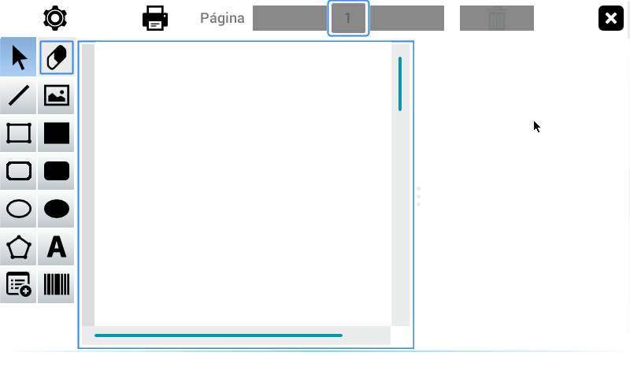
Na tela serão visualizadas três opções:
- No campo central é possível selecionar as localizações das informações que serão impressas no ticket.
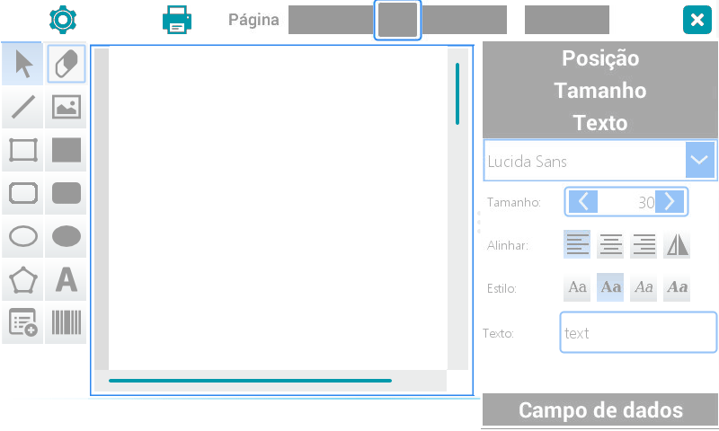
- Na esquerda será exibida uma série de ações disponíveis para edição do texto, desenhar e selecionar outros campos de informação (Ex. Tabela nutricional e Código de Barras)
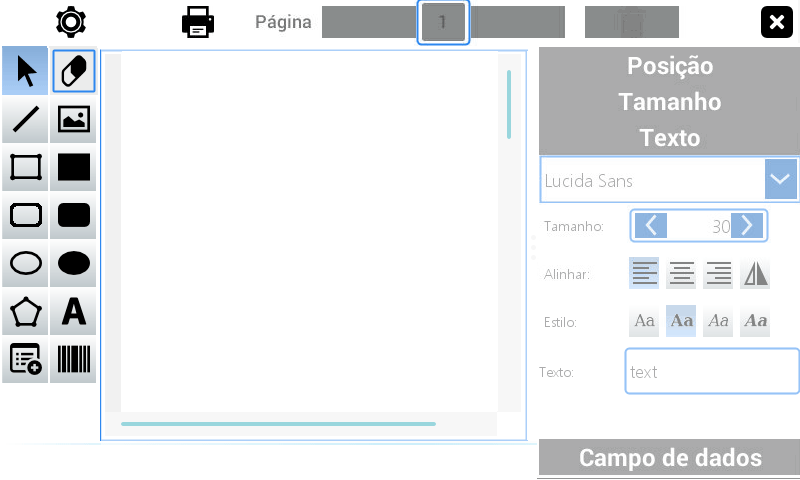
Ao selecionar qualquer campo de texto do quadro central é habilitado a direita da tela, um terceiro campo de ações:
- Aqui se encontram as opções de Posição - Tamanho - Texto e Campo de dados. Também serão visualizados as opções que podem ser habilitadas posteriormente.
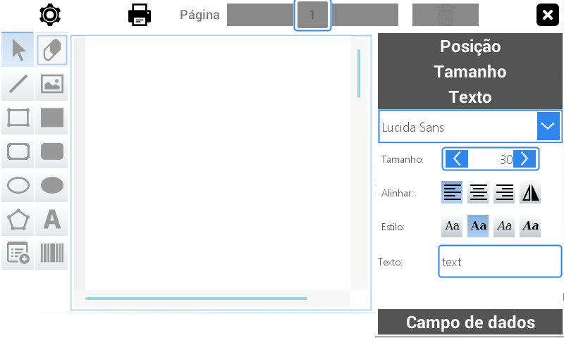
De acordo com a layout desejado, selecione as opções disponíveis no quadro à esquerda e posicione no quadro central.
Para inserir uma imagem selecione a opção e coloque-a na posição desejada
Ao posicionar a figura sobre o layout, é observado um retângulo preto. Pressione sobre ele para ativá-lo.
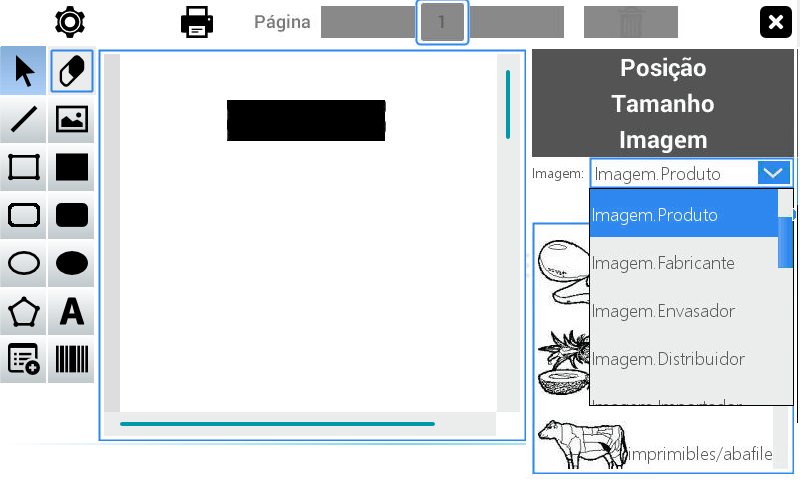
Será habilitado à esquerda um campo Imagem.
Selecione no campo Imagem e escolha a opção desejada.
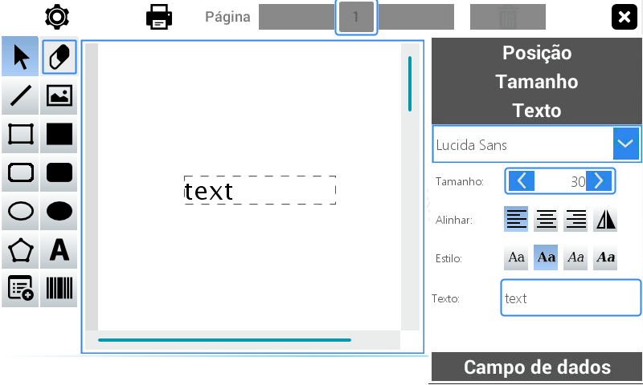
Ao pressionar sobre qualquer campo de texto serão visualizados as propriedades à direita.
Na opção Texto é possível selecionar a fonte dentre as opções disponíveis.
Selecione o tamanho da letra através das setas localizadas no extremo do campo ou inserindo o número através do teclado numérico.
Selecione Alinhar e Estilo pressionando sobre o formato que se ajusta a sua necessidade.
No campo de Texto insira a denominação. Para isto, pressione o campo para selecioná-lo e habilite o teclado alfanumérico.
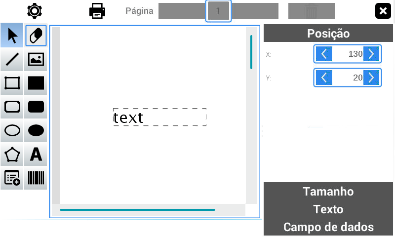
No campo Posição informe através das linhas X e Y os valores correspondentes.
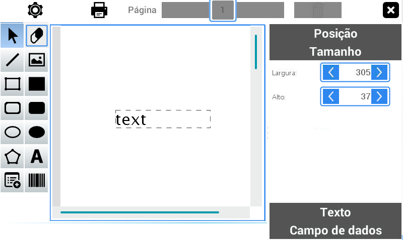
Realize a mesma operação no campo Tamanho através das opções de Largura e Altura
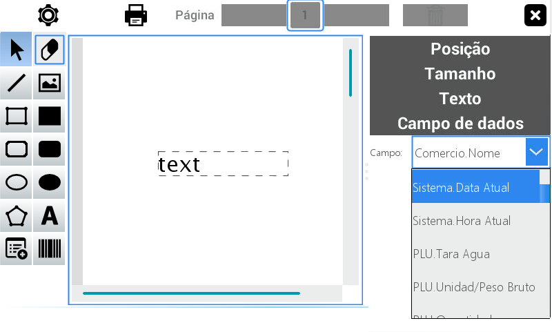
À seguir, selecione Campo de Dados e escolha a informação que será visualizada dentre as opções disponíveis.
Ao pressionar sobre a imagem do código de barras na lateral esquerda, é possível inserir a informação do código de barras do produto.
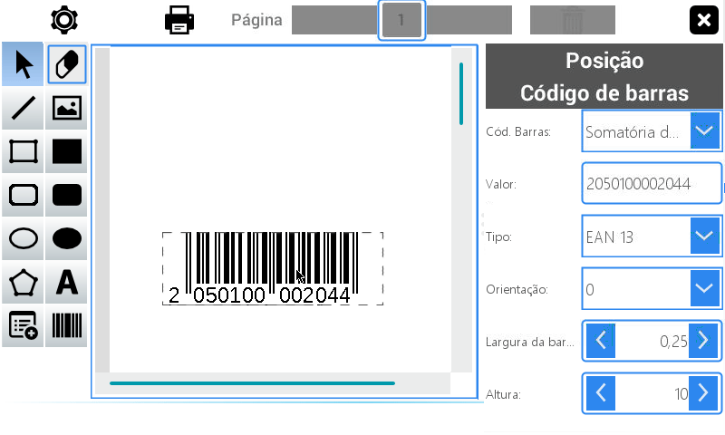
Será habilitada na lateral esquerda uma linha adicional denominada “Código de barras” e os seguintes comandos para edita-la: Cod. Barras - Valor - Tipo - Orientação - Largura da barra - Altura.
Ao pressionar sobre tabela do quadro esquerdo e a seguir sobre o campo é possível inserir uma tabela nutricional.
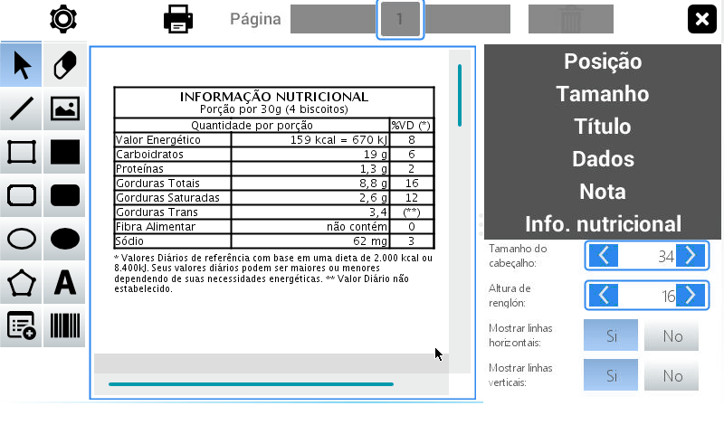
Será habilitado à esquerda uma lnha adicional denominada Info. Nutricional e os seguintes comandos para editar: Tamanho cabeçalho - Altura de linha - Mostrar linhas horizontais - Mostrar linhas verticais.
Pressionando o botão Propriedades localizado na margem inferior direita da tela é possível ajustar a altura e as margens de impressão.
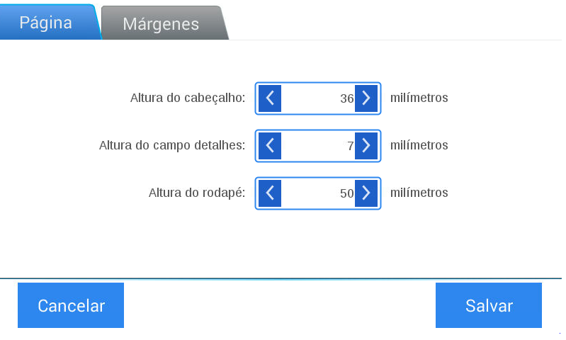
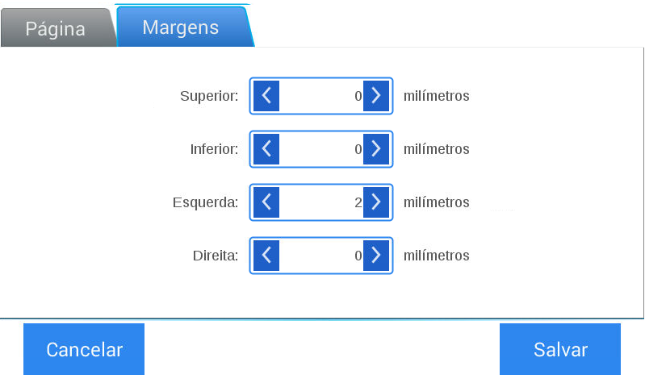
Em seguida pressione Salvar ou cancelar para retornar à tela inicial.
Para visualizar os tickets criados utilize o campo Página localizada na margem superior da tela.
Na margem superior esquerda pressione o botão de impressora para visualizar o ticket selecionado.
Pressione X para fechar a edição.
Etiquetas
Através desta opção é possível editar o formato da etiqueta. À seguir detalharemos as opções disponíveis no equipamento para a edição de etiquetas.
Acesse o menu pressionando a tecla .
Selecione o usuário e digite a senha correspondente
Pressione Aceitar
Escolha a opção Configuração localizada na posição inferior direita da tela
será visualizado o menu completo deste módulo. Pressione Etiquetas
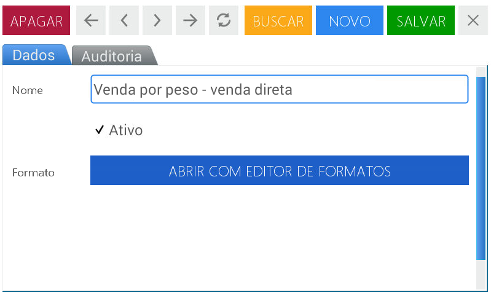
Para iniciar uma nova etiqueta pressione Novo localizado na barra superior da tela.
Selecione Dados e preencha o campo Nome com a denominação da etiqueta a ser criada.
A opção Ativo aparece marcada por default. Caso deseje não utilizar um modelo de etiqueta, desmarque esta opção.
À seguir é visualizado a seguinte tela
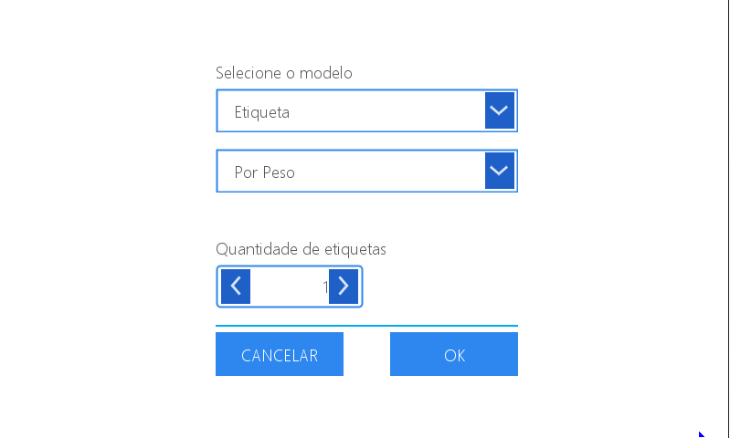
Selecione o modelo e a quantidade de etiquetas. Pressione Aceitar.
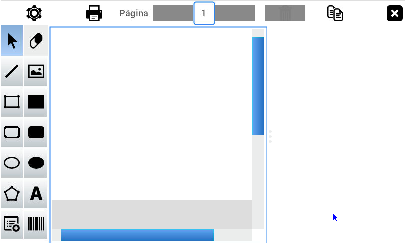
Utilize os mesmos procedimentos descritos no módulo Ticket para confeccionar as etiquetas de acordo com a sua necessidade.
Associar formato
Permite selecionar o formato de impressão dos comprovantes. O equipamento dispõe de seis formatos pré-estabelecidos:
- Produtos vendidos por peso (venda direta)
- Produtos vendidos por peso (pré-empacotamento)
- Produtos vendidos por unidade (venda direta)
- Produtos vendidos por unidade (pré-empacotamento)
- Congelados
- Drenados
Acesse o menu pressionando a tecla .
Selecione o usuário e digite a senha correspondente
Pressione Aceitar
Escolha a opção Configuração localizado no canto inferior direito da tela
Sera visualizado o menu completo deste módulo. Pressione Associar
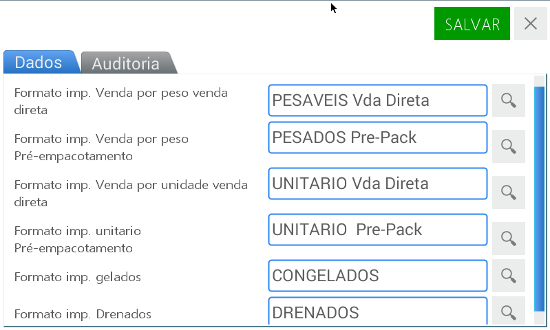
Selecione Dados e escolha o formato de impressão que deseja associar.
Pressione a lupa para utilizar a busca.
Ao finalizar pressione Salvar.
Na aba Auditoria contém as informações relacionadas aos registros dos dados armazenados.
Códigos de barras
Nos comprovantes de venda no modo de ticket ou etiqueta, será impresso um código de barras no formato EAN-13.
Através desta opção é possível modificar a configuração do código de barras, selecionando dentre as 3 opções disponíveis, determinando o campo, a posição e a quantidade de dígitos desejado (12 dígitos no total)
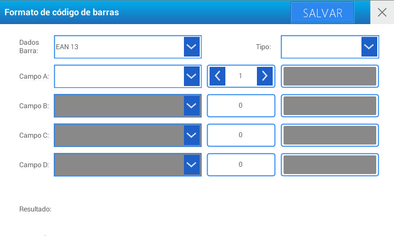
A balança dispõe de três opções de código de barras:
VENDA POR PESO: Produtos vendidos por peso.
Será impresso um comprovante de venda com a seguinte configuração de fábrica: 2 0 P P P P I I I I I I X. O valor padrão do prefixo é o número 20, que identifica na sua leitura através do código de barras como um produto vendido por peso.VENDA POR UNIDADE: Produto vendido por unidade.
A configuração definida de fábrica é 2 1 P P P P I I I I I I X e será impressa no comprovante no momento da venda de um produto vendido por unidade. O valor padrão do prefixo é o número 21, que identifica na sua leitura através do código de barras como um produto vendido por unidade.VÁRIOS: O valor de configuração de fábrica para esta condição é: 2 2 A A I I I I I I I I X.
Este código de barras é utilizado quando dois ou mais produtos são vendidos no mesmo comprovante (produtos diferentes, que não seria possível a identificação pelo leitor). Para que a leitura do caixa (PDV) possa diferenciar dentre cada configuração, é aconselhável utilizar um prefixo (2 dígitos iniciais) de números fixos diferentes para cada configuração.
À seguir exemplificaremos as opções para configurar o código de barra dos produtos.
Acesse o menu pressionando a tecla .
Selecione o usuário e digite a senha correspondente.
Pressione Aceitar.
Escolha a opção Configuração localizada na posição inferior direita da tela.
Será visualizado o menu completo deste módulo. Pressione a opção Códigos de Barras.
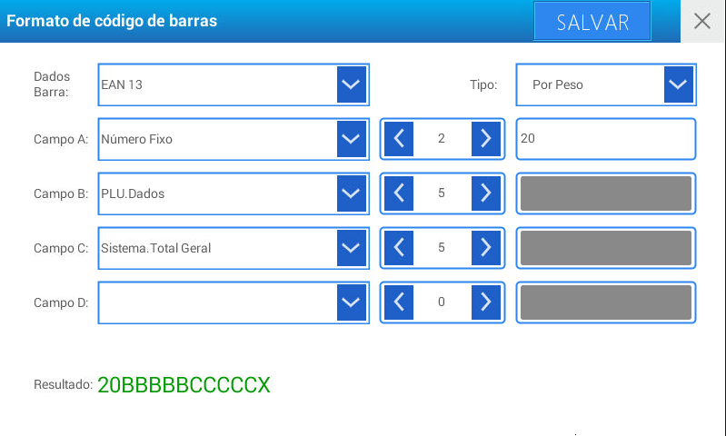
Selecione primeiro o tipo de código de barras através do campo Tipo.
Complete os campos A, B, C e D pressionando a seta no extremo do campo.
Selecione a opção desejada.
Insira a quantidade de dígitos para a opção escolhida.
Na linha Resultado é visualizado a informação sobre o código de barras escolhido.
Para finalizar, pressione Salvar.
Conexão com banco de dados
Permite acessar a base de dados do equipamento, Substituir a senha, selecionar tempo de espera para sincronização inicial e configurar a base de dados remota. Para acessar este módulo siga os seguintes passos:
Acesse o menu pressionando a tecla .
Selecione o usuário e digite a senha correspondente.
Pressione Aceitar.
Escolha a opção Configuração localizada na parte inferior direita da tela.
Será visualizado o menu completo deste módulo. Pressione Conexão com banco de dados
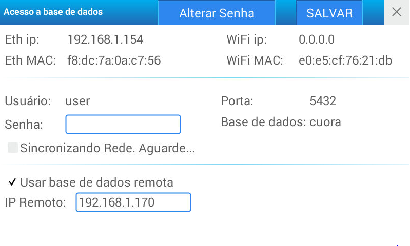
Na tela inicial serão visualizadas as informações vinculadas a base de dados do equipamento.
Se ao ligar a balança, por algum motivo não for possível o acesso à rede de comunicação, para liberar o equipamento deve-se pressionar a tecla VENDA. Será visualizada uma mensagem: OS DADOS DO EQUIPAMENTO PODEM ESTAR DESATUALIZADOS…. Isto é devido a não atualização de possíveis novas modificações na base.
Insira a SENHA DE ADMINISTRADOR para iniciar a operação da balança sem conexão de REDE.
Quando a balança está conectada na REDE, esta apresenta algumas restrições de acessos (por segurança) devido somente poder ser operados através do servidor.
Caso ocorra alguma alteração na balança, será enviado um aviso ao servidor (Assim que ocorrer uma nova conexão).
É possível também utilizar uma base de dados remota, através da opção Usar base de dados remota.
Caso realize alguma alteração, pressione Salvar.
Otimização da base de dados
Permite otimizar o funcionamento da base de dados do equipamento. Esta opção é recomendada, caso ocorra lentidão nas operações devido a muitos registros armazenados.
Para utilizar esta opção:
Acesse o menu pressionando a tecla .
Selecione o usuário e digite a senha correspondente.
Pressione Aceitar.
Escolha a opção Configuração localizada na parte inferior direita da tela.
Será visualizado o menu completo deste módulo. Pressione Otimização da base de dados
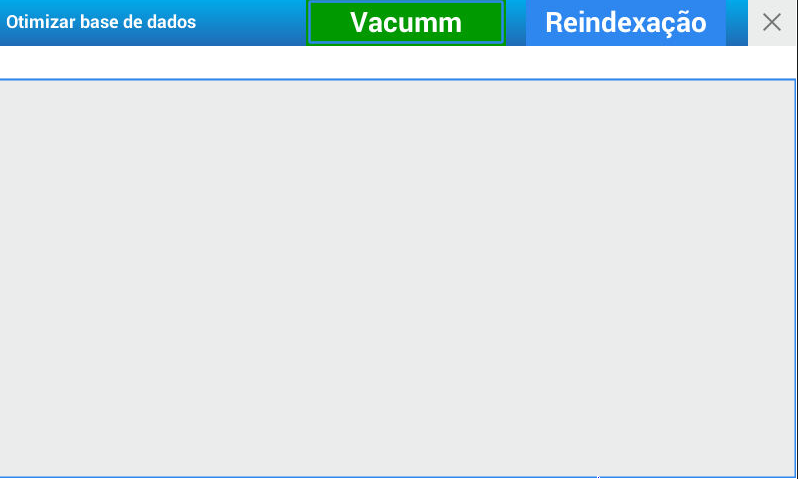
Serão visualizadas na margem superior duas opções.
Pressione Vacumm para realizar a limpeza dos dados.
Pressione Reindex para reindexar os registros.
Pressione X para fechar a tela e retornar ao menu principal.
Backup de Base de Dados
Permite realizar uma cópia de segurança da base de dados da balança Para acessar esta opção:
Acesse o menu pressionando a tecla .
Selecione o usuário e digite a senha correspondente.
Pressione Aceitar.
Escolha a opção Configuração localizada na parte inferior direita da tela.
Será visualizado o menu completo deste módulo. Pressione Backup de Base de Dados
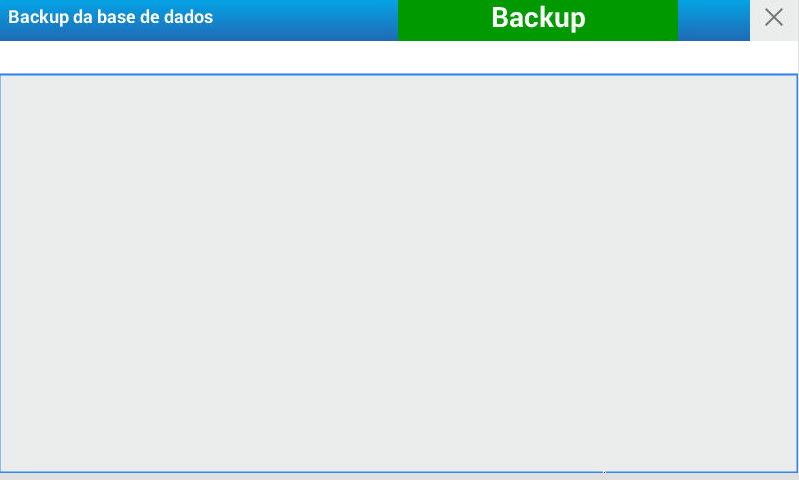
Pressione Backup localizada na margem superior direita.
Será visualizada uma mensagem de espera e os detalhes da operação.
Pressione X para fechar a tela e voltar para o menu principal.
Restauração da base de dados
Permite restaurar a base de dados de um backup previamente efetuado
Acesse o menu pressionando a tecla .
Selecione o usuário e digite a senha correspondente.
Pressione Aceitar.
Escolha a opção Configuração localizada na parte inferior direita da tela.
Será visualizado o menu completo deste módulo. Pressione Restaurar Base de Dados
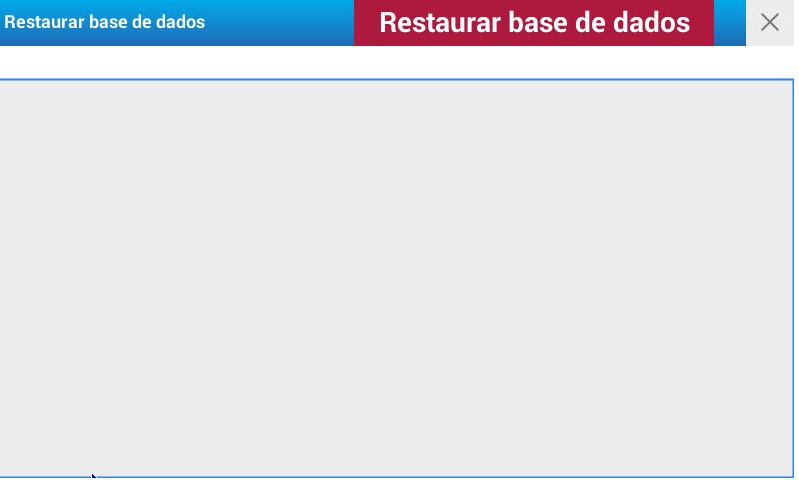
Pressione Restaurar base de dados localizada na margem superior direita.
Será visualizada uma mensagem de espera e os detalhes da operação.
Pressione X para fechar e retornar ao menu principal
Valores de fábrica
Permite re-estabelecer os valores da balança ao seu estado inicial. Para acessar este módulo siga os seguintes passos:
Acesse o menu pressionando a tecla .
Selecione o usuário e digite a senha correspondente.
Pressione Aceitar.
Escolha a opção Configuração localizada na parte inferior direita da tela.
Será visualizado o menu completo deste módulo. Pressione Valores de Fábrica
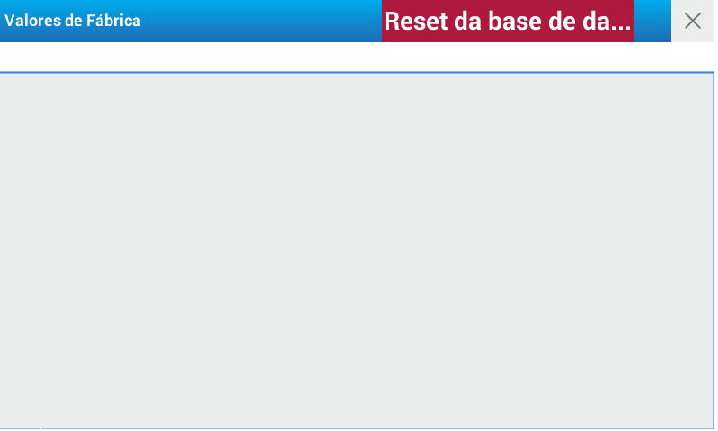
Pressione Restaurar valores de fábrica localizado na margem superior direita.
Será visualizada uma mensagem de espera e os detalhes da operação.
Pressione X para fechar e retornar ao menu principal.